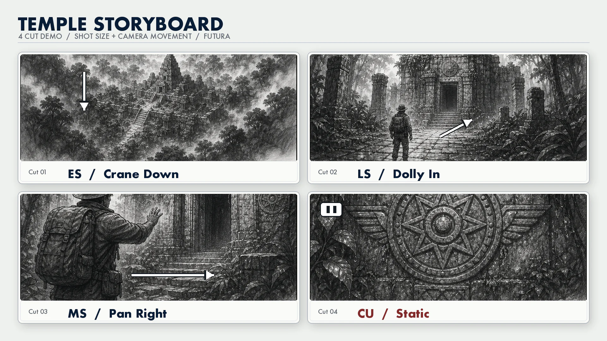
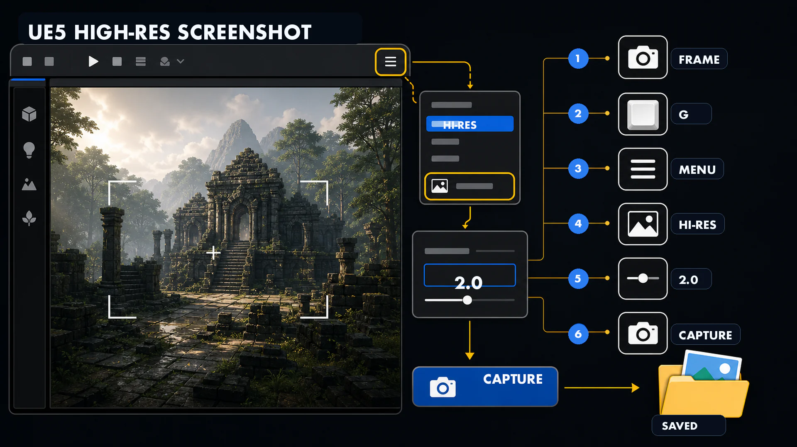

7주차 3교시 — 실습: 스토리보드 초안 제작 (학생용)
관련 문서
| 관계 | 문서 |
|---|---|
| 강의 계획서 | 강의계획서: Game Engine II |
| 강의 아웃라인 | 7주차 아웃라인 |
| 이전 교시 | 7주차 2교시 핸드아웃 |
- UE5 레벨 스크린샷을 활용해 시네마틱 스토리보드 초안을 제작할 수 있다
- 각 컷에 샷 사이즈, 카메라 움직임, 상황 설명을 기록할 수 있다
- 중간고사 제출 전 체크리스트로 스토리보드 완성도를 점검할 수 있다
실습: 스토리보드 초안 제작
실습 안내
오늘 만드는 스토리보드는 중간고사의 초안입니다.
실습 과제:
| 항목 | 내용 |
|---|---|
| 과제 | 시네마틱 스토리보드 4컷 이상 |
| 소재 | 자기 UE5 레벨 (6주차 과제 레벨 권장) |
| 제출물 | 스토리보드 PPT/PDF — 오늘 수업 끝나기 전 LMS 업로드 |
| 진행 확인 | 오늘은 초안 제출 확인용. 완성 전 상태여도 현재까지 만든 내용을 업로드 |
중간고사 제출물은 6컷 이상이지만, 오늘은 4컷만 만들면 됩니다. 나머지는 2026년 4월 29일 (수)까지 보충하면 됩니다.
시연 참고: 처음 2컷 만들기
시연 시나리오:
| 항목 | 내용 |
|---|---|
| 테마 | 버려진 사원을 발견하는 탐험가 |
| 분위기 | 신비, 경외, 적막 |
| 장소/시간 | 숲속 고대 사원, 이른 아침 안개 |
1. 컨셉 확인
먼저 컨셉을 확인합니다. 테마와 분위기가 정해져 있으면 캡처할 때 무엇을 찍어야 할지 명확해집니다.
2. UE5에서 Cut 1 캡처
첫 컷은 ES(Establishing Shot)입니다. 관객에게 장소가 어디인지 알려주는 역할을 합니다.
- 뷰포트에서 레벨 전체가 보이는 위치로 이동 (WASD + 마우스 우클릭)
- G키를 눌러서 게임 뷰로 전환 (UI 숨기기)
- 구도를 잡습니다 — 3분할 법칙을 생각하면서 사원이 교차점에 오도록 배치합니다
카메라 높이를 살짝 높이면 풍경이 더 넓어 보입니다. 아이레벨보다 약간 높은 것이 ES에 적합합니다.
- 뷰포트 ≡ → High Resolution Screenshot → Multiplier 2.0 → Capture
저장 경로는 프로젝트폴더/Saved/Screenshots/ 입니다.
- 캡처된 이미지를 PPT 템플릿 Cut 1에 붙여넣기
3. Cut 1 정보 작성
각 컷에 다음과 같은 정보를 작성합니다:
| 항목 | 작성 내용 |
|---|---|
| 씬/컷 번호 | S#1 - Cut 1 |
| 샷 사이즈 | ES |
| 카메라 무빙 | Crane Down (slow) — 하늘에서 내려오며 사원 전경이 드러남 |
| 상황 설명 | 안개 낀 숲 사이로 고대 사원의 윤곽이 드러난다 |
Crane Down은 첫 컷에서 하늘에서 내려오면서 장소를 드러내는 연출에 효과적입니다. 극적인 도입부를 만들 수 있습니다.
4. Cut 2 캡처 + 정보 작성
두 번째 컷은 LS로 좀 더 가까이 다가갑니다.
- 카메라를 사원 입구 쪽으로 이동 — 사원 전체가 보이면서 입구가 눈에 띄는 구도
- G키 → High Resolution Screenshot → Capture
- 템플릿 Cut 2에 붙여넣기
| 항목 | 작성 내용 |
|---|---|
| 씬/컷 번호 | S#1 - Cut 2 |
| 샷 사이즈 | LS |
| 카메라 무빙 | Dolly In (medium) — 사원 입구를 향해 천천히 전진 |
| 상황 설명 | 사원 입구가 보인다. 이끼 낀 돌기둥 사이로 어둠이 깊다 |
Cut 1은 ES + Crane Down으로 넓게 시작하고, Cut 2는 LS + Dolly In으로 다가가는 구조입니다. 넓은 데서 좁은 데로 이동하는 것이 기본 패턴입니다.
5. 흐름 확인
2컷만 만들어도 이야기의 흐름이 생깁니다. 첫 컷에서 '숲속에 무언가가 있다', 두 번째 컷에서 '사원이다, 입구가 보인다'로 관객이 자연스럽게 따라가게 됩니다. 예를 들어 Cut 3은 MS로 사원 입구의 디테일을, Cut 4는 CU로 벽에 새겨진 문양을 잡으면 4컷이 완성됩니다.

LMS에서 스토리보드 템플릿을 다운로드하세요. PPT와 구글슬라이드 두 가지가 있습니다.

자율 실습
작업 순서:
| 단계 | 할 일 | 예상 시간 |
|---|---|---|
| 1. | 컨셉 확인: 6주차 컨셉 문서 열기 → 테마·분위기 재확인 | 2분 |
| 2. | UE5 스크린샷 캡처: 레벨에서 4~6개 앵글로 High Resolution Screenshot | 8분 |
| 3. | 템플릿에 배치: 스크린샷을 스토리보드 템플릿 컷에 넣기 | 3분 |
| 4. | 정보 작성: 각 컷에 샷 사이즈·카메라 무빙·상황 설명 기입 | 10분 |
| 5. | 검토 + 제출: 흐름 확인, LMS 업로드 | 2분 |
UE5 스크린샷 캡처 방법:

- 뷰포트에서 원하는 앵글로 이동 (마우스 우클릭 + WASD)
- G키 → 게임 뷰 전환 (기즈모/아이콘 숨김)
- 뷰포트 ≡ → High Resolution Screenshot
- Multiplier 2.0 → Capture
- 저장 경로:
프로젝트폴더/Saved/Screenshots/
캡처 팁:
| 팁 | 설명 |
|---|---|
| 3분할 가이드 | 뷰포트 ≡ → Advanced Settings → 3분할 오버레이 켜기 |
| 다양한 거리 | 같은 위치에서 가까이/멀리 여러 장 찍어놓기 |
| 시간대 변경 | Directional Light 회전으로 석양/새벽 분위기 바꿔서 캡처 |
| 앵글 변경 | 같은 오브젝트를 아이레벨/로우앵글/하이앵글로 각각 캡처 |
컨셉이 없는 경우 — 시나리오 3종
패턴 A: 발견 (넓은 곳 → 좁은 곳)
| 컷 | 샷 | 무빙 | 내용 |
|---|---|---|---|
| 1 | ES | Crane Down | 넓은 풍경 — 시간과 장소 설정 |
| 2 | LS | Dolly In | 풍경 속에서 특정 구조물이 보인다 |
| 3 | MS | Pan Right | 구조물에 가까이 — 디테일이 드러난다 |
| 4 | CU | Static | 핵심 오브젝트의 클로즈업 |
가장 기본적인 패턴입니다. 넓은 데서 시작해서 점점 좁아지는 구조로, 이것만으로도 시네마틱 느낌을 낼 수 있습니다.
패턴 B: 여정 (이동하면서)
| 컷 | 샷 | 무빙 | 내용 |
|---|---|---|---|
| 1 | EWS | Static | 길의 시작점 — 끝이 안 보이는 풍경 |
| 2 | LS | Track Right | 길을 따라 옆에서 따라가며 이동 |
| 3 | MS | Dolly In | 목적지에 가까워짐 — 무언가가 보이기 시작 |
| 4 | ECU | Static | 도착한 곳의 디테일 (문양, 글씨, 질감) |
Track Shot을 활용해보고 싶은 경우에 적합한 패턴입니다.
패턴 C: 대비 (밝음 → 어둠 또는 반대)
| 컷 | 샷 | 무빙 | 내용 |
|---|---|---|---|
| 1 | ES | Static | 밝고 평화로운 장면 (예: 햇살 드는 정원) |
| 2 | MS | Tilt Down | 시선이 아래로 — 그림자 속 무언가 |
| 3 | CU | Dolly In | 어두운 곳의 디테일 — 분위기 전환 |
| 4 | EWS | Crane Up | 다시 넓어지며 — 밝은 세계와 어두운 세계가 함께 보임 |
분위기 전환이 있어서 스토리텔링 점수에서 유리한 패턴입니다.
마무리
완성 여부와 관계없이 현재 상태 그대로 LMS에 업로드하면 됩니다. 오늘은 완성도보다 초안의 진행 상태를 확인하는 것이 목적입니다.
중간고사까지 할 것
2026년 4월 29일 (수)까지 TODO:
| 순서 | 할 일 | 설명 |
|---|---|---|
| 1. | 오늘 초안 보완 | 오늘 만든 4컷을 다듬고, 부족한 정보 채우기 |
| 2. | 2컷 추가 | 6컷 이상으로 늘리기. 위 시나리오 패턴 참고 |
| 3. | 컨셉 문서 작성 | 테마, 장소/시간, 키워드, 시놉시스, 레퍼런스 이미지, 컬러 팔레트 |
| 4. | 표지 만들기 | 과목명, 학번, 이름, 제출일 |
| 5. | 합본 | 표지(p.1) → 컨셉 문서(p.2) → 스토리보드(p.3~)를 하나의 PDF/PPT로 |
| 6. | 파일명 확인 | 중간고사_학번_이름.pdf |
| 7. | LMS 업로드 | 2026년 4월 29일 (수) 오후 11:59까지 |
중간고사 가이드라인 문서가 LMS에 올라가 있습니다. 체크리스트와 FAQ가 포함되어 있으니 제출 전 확인하시기 바랍니다.
최종 체크리스트:
| 번호 | 체크 | 항목 |
|---|---|---|
| 1 | 미확인 | 스토리보드 6컷 이상 (오늘 4컷 + 2컷 추가) |
| 2 | 미확인 | 각 컷에 샷 사이즈 약어 표기 |
| 3 | 미확인 | 각 컷에 카메라 무빙 표기 (화살표 또는 텍스트) |
| 4 | 미확인 | 각 컷에 상황 설명 1줄 이상 |
| 5 | 미확인 | AI 이미지 사용 시 도구명+프롬프트 표기 |
| 6 | 미확인 | 컨셉 문서 1장 포함 |
| 7 | 미확인 | 파일명: 중간고사_학번_이름.pdf |
| 8 | 미확인 | 2026년 4월 29일 (수) 오후 11:59까지 LMS 업로드 |
그림 실력은 채점 대상이 아닙니다. UE5 스크린샷을 활용해도 되고, 손그림이어도 됩니다. 핵심은 기획 의도가 보이는지 여부입니다.
질문이 있으면 LMS 게시판이나 메일로 문의하시기 바랍니다.